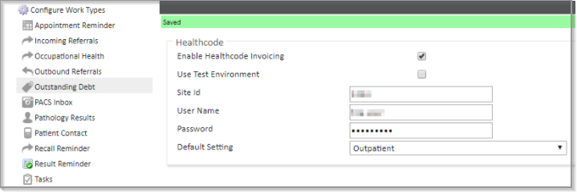
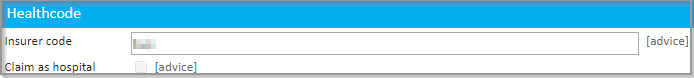
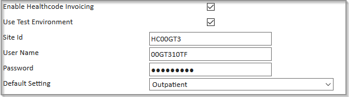

This article will take a Super User through the process of setting up the Healthcode integration with their Meddbase Chamber.
This article will detail:
Users can send invoice data to Healthcode EDI to confirm whether the insurer will fund the selected treatment for the assigned invoicing diagnosis. Healthcode will map a provider's* clinicians and treatment sites to a designated validation platform (HC VEDA), as well as its contracts and services. Invoice data can be transmitted directly from Meddbase to their invoice validation service to provide real-time feedback on the eligibility and validity of invoices. This ensures any errors are rectified before they are sent to the insurer, cutting down on the turnaround time and making sure you receive payment as soon as possible.
Healthcode can also supply providers with electronic remittances for most insurers.
These will contain a full breakdown of invoices paid (including any shortfalls/excess declarations).
*Provider (Healthcode definition): A hospital, clinic, practice or practitioner that either provides medical care and/or surgical treatment to a patient or gives access to the same and is identified by a unique code within Healthcode’s internal systems. The unique codes are referred to as an SP number for practitioners and an HP number for all other types of provider (hospitals, clinics etc).
Providers will need to submit a spreadsheet containing details of their Treatment Sites practitioners (including their GMC/professional numbers) and services to Healthcode for mapping. This will need to be configured in the Meddbase chamber, Meddbase will allocate each practitioner and treatment site a unique code, in Healthcode this is called a 'A Code'. If you would like a copy of this spreadsheet or need advice completing it, please contact support.
Healthcode are then able to map the A codes to the practitioners and Treatment Sites provided.
To start the process of signing up to Healthcode for you will need to register through the Healthcode website (https://www.healthcode.co.uk/ > Register)
Please be aware that Healthcode will attempt to map all relevant ICD10 codes to ICD9 where available, but there may not always be a suitable code.
To begin setting up the integration:
Next, you will need to add your Healthcode account details to Meddbase. To do this:
If this work type is not visible, you will need to add it as a new work type.

Configure the following settings:
| Enable Healthcode Invoicing | Check this box to enable Healthcode invoicing. |
| Use Test Environment | Enables Meddbase users to submit invoices to Healthcode for testing and training purposes. Important: please do not use this without first speaking to a member of Healthcode as they will need to configure your test environment. |
| Site Id, User Name, Password | Healthcode will provide these to you once an account has been setup for you. Please contact Healthcode directly if you need to obtain these details. |
| Default Setting | Must be outpatient on the bill to Healthcode. This is a global setting but can be changed per session on an individual clinician’s site schedule. You can find out from the insurance company if you need to use a particular 'setting' to make the invoice valid. |
Following the initial setup, there are different Healthcode settings in the system which need to be addressed to complete the Healthcode configuration. These are:
When invoices are submitted to Healthcode, they must include a claim source. This can be:
Some insurers require billing companies to claim as Hospital for electronic invoicing. Meddbase allows you to configure claim sources at the company, consultant, and site level depending on your insurer agreements.
If the Healthcode section is not visible on any records, please do the following:
Once the integration has been turned on, a new section should be available to add to each doctor's personal details page.
Fields you can set here:
Has been registered (mandatory)
Enables invoices for this consultant to be submitted to Healthcode.
Invoice as payee (optional)
Check this if the consultant has a custom insurer contract and needs invoices to be billed under their name, even if raised by the clinic.
Once the integration has been turned on in system features, a new section should be available to add to your chamber company's details page.
If the creditor needs to claim as a hospital in order to satisfy a particular insurer, then 'claim as hospital' should be ticked. Set here if the whole billing company must claim as a hospital to meet insurer requirements.

For some sites, their provider number should be sent to Healthcode in preference to that of the billing company. In this case check the box 'Invoice as payee'. Your sites can be found under Admin > Site Management. Set here if you want to define claim rules for a specific site or clinic.
Each insurer is identified by a unique insurer code. This code ensures Healthcode recognises the insurer when processing invoices.
The insurer code is sent on every electronic invoice that goes to Healthcode. Healthcode uses the code to check the invoice against the correct insurer record. If the code is missing or incorrect, the invoice may be rejected. Meddbase therefore needs the correct insurer code to link invoices to the right insurer when claims are submitted.
In Meddbase, the insurer code is entered on the insurer company’s details page. Once the Healthcode integration is enabled, a Healthcode section becomes available on each insurer’s details page where this code can be provided.
If this section is not visible:
This is a code that uniquely identifies the insurer to Healthcode. Below are some typical codes used for insurers:
| Company | Insurer code |
| Aetna | agb |
| Allianz | awc |
| Aviva | nuh |
| Bupa | bup |
| Bupa Global | bui |
| Cigna UK | cig |
| Cigna International | cin |
| Exeter Family Friends | efs |
| Healix | hhs |
| Pruhealth | pru |
Simplyhealth | bcw |
Vitality | slh |
| WPA | wpa |
If an insurance company you use is not listed above, please contact them for the code they use to identify with Healthcode.
You will find out from the insurance company if you need to use a particular 'setting' to make the invoice valid.
This can be found under the Outstanding Debt work item settings:

The setting can also be overridden per session:
To provide Healthcode with the correct procedure information, you can now add Procedure Codes (CCSD codes) directly to services in Meddbase.
Go to Start Page > Admin > Service Management.
Open the service you want to edit.
In the Procedure Code field, enter the appropriate CCSD code or the Meddbase Service ID.
Save your changes.
When this service is later added to an appointment, the CCSD code is automatically pulled into the billing item and sent on the electronic invoice. This ensures Healthcode receives a standardised record of the services delivered.
Some of your activity is delivered through Appointment Types rather than Services. The following will also need to be updated:
Each invoice submitted to Healthcode must include an invoice diagnosis code. Healthcode accept ICS, ICD9, ICD10, or OSICS codes for sports injuries.
You will have completed a mapping exercise to map all of your:
This mapping exercise is sent across to Healthcode who will provide you with support and guidance on the correct diagnosis codes for your clinic. Once done, you may either add the diagnosis codes manually or import the codes into your chamber. Please contact Meddbase support for advice on adding the diagnosis codes to your chamber.
Diagnosis Code
Entered at the invoice level.
Only one per invoice.
Identifies the main diagnosis/purpose of the invoice.
Checked by Healthcode against the insurer’s approved list.
Procedure Codes (CCSD)
Entered at the service level.
Set up in Admin > Billing Rules > Services.
Multiple can appear on an invoice (one for each service performed).
Identifies the specific procedures provided using Healthcode’s CCSD list.
All invoices submitted to Healthcode must have an appointment and an invoicing diagnosis code set.
Ensure the Insurer is set as the debtor when booking the appointment.
Add all services during the consultation.
Each service will include a procedure code.
Complete the consultation and discharge the appointment.
Only after discharge can the invoice be submitted to Healthcode.
A diagnosis code can be added either during the consultation or after the fact. Possible locations to add a diagnosis code:
If a diagnosis code was previously entered before handling the invoice, it will auto-populate on the invoice.
Open the invoice, make any final changes if needed.
Click Submit to Healthcode.
Status changes from Not Sent → In Healthcode Queue.
A work item is created in Outstanding Debt for tracking.
If the 'Healthcode' button does not appear on invoices, first check that the debtor is an insurance company. If the debtor is a patient, then the button will not appear.
If the error is one of the following:
You may have used an insurer code that is not configured in Healthcode yet
This means Healthcode needs to 'map' an insurer in their setup. You will need to inform Healthcode if you want to start using a new insurer that you have not used before.
Healthcode web services said: Access Denied:
Your site ID is not recognised or your password is incorrect. You will need to contact Healthcode to verify your site ID.
Healthcode web services did not recognise this chamber's Site Id
Your site ID is not recognised or your password is incorrect. You will need to contact Healthcode to verify your site ID.
Healthcode web services could not validate the username for this site
Contact Healthcode as your username is not valid.
Healthcode web services were unavailable
Healthcode is currently unavailable. Contact Healthcode or try again later
One or more problems were found with the Healthcode setup
Please verify your setup. If you need training for your set, MMS can provide onsite or remote training session. Please contact Meddbase support to arrange training.
Billing item 'xxxxx' is not associated with an appointment
This happens if billing items are added by hand to an invoice, rather than by adding a service to an appointment. You cannot issue an invoice to Healthcode unless it has an associated appointment. In this case, you will need to re-issue the invoice via an appointment.
Debtor 'xxxx' does not have any healthcode settings provided / Debtor 'xxxx' is not configured as an insurer for Healthcode
This means the insurer doesn't have a code set. Please see Insurer settings for further details.
Problem with Setting: Must be I, D or O
The type of Healthcode invoice has not been set correctly. You need to set the invoice type to be either:
Problem with RegistrationNo: No matching membership details can be found
The insurance details of a patient may be incorrect. Check that the membership number provided by the patient is correct.
Problem with ProcCode: Invalid Code
The procedure code for the invoiced product is invalid or missing for the insurance provider.
Problem with Diagnosis: Code not Mapped
The diagnosis code selected is not valid for the insurance provider.
Troubleshooting Healthcode invoicing issues:
Depending on the error messages output by Meddbase, customers may find this helpful in remediating most of their billing issues: https://www.healthcode.co.uk/help-and-support/veda-invoice-errors-and-how-to-fix-them/
Please note the link contains screenshots of HC VEDA – although Meddbase clients will be submitting bills via the API, the error reasons will remain the same.
Other helpful links
Healthcode’s Glossary of Terms:
https://www.docs.healthcode.co.uk/glossary-of-terms__trashed/glossary/#provider